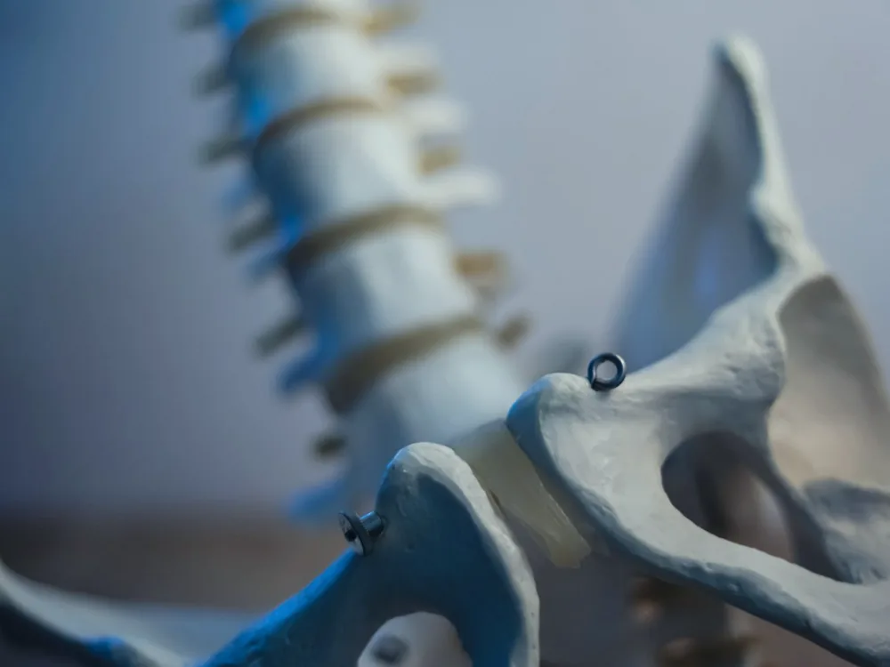
Грыжи и протрузии
Поясничный и шейный отделы, L3-L4, L4-L5, L5-S1. Разбираем, что даёт боль и можно ли обойтись без операции.
Подробнее о лечении грыжи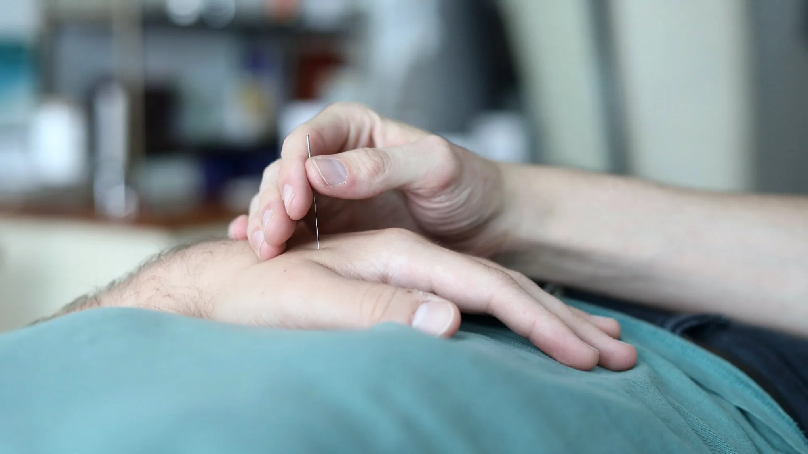
Алматы · клиника боли и метаболизма · с 2024 года
Грыжи и протрузии, боли в спине и шее, артроз, пяточная шпора, снижение веса. Авторский подход Reflex: восточные методы и европейская реабилитация, опыт врача более 16 лет.
Все врачи клиники - женщины. Принимаем и женщин, и мужчин
Направления
Reflex ведёт два направления. Врач сначала смотрит причину, потом подбирает программу по показаниям - а не продаёт процедуру из прайса.
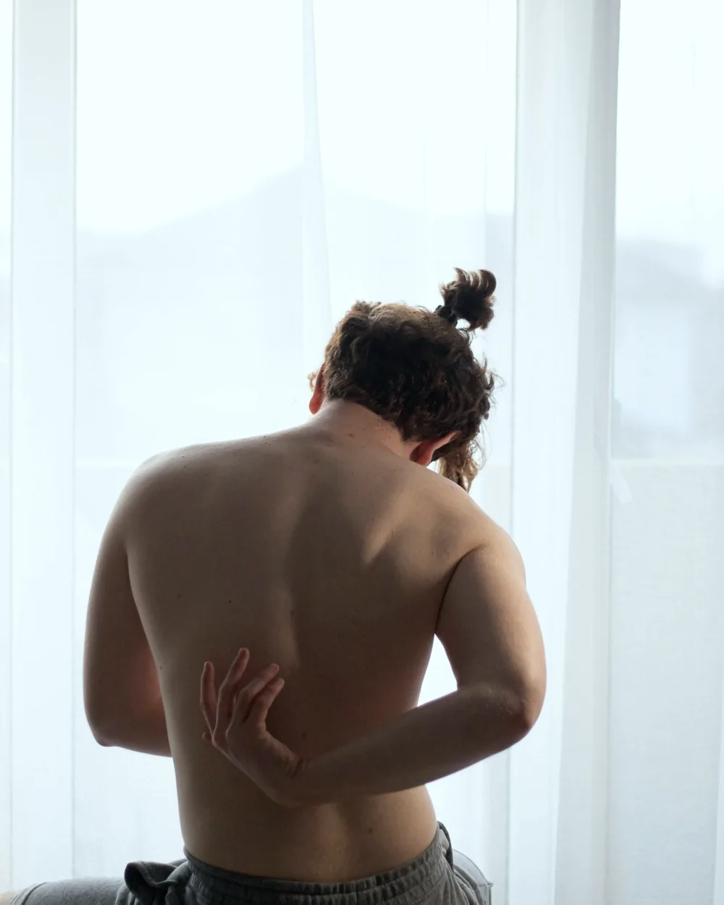
Боль, позвоночник и суставы Грыжи и протрузии Спина, поясница, шея Суставы, артроз, коксартроз Пяточная шпора Хроническая боль и неврология Что лечим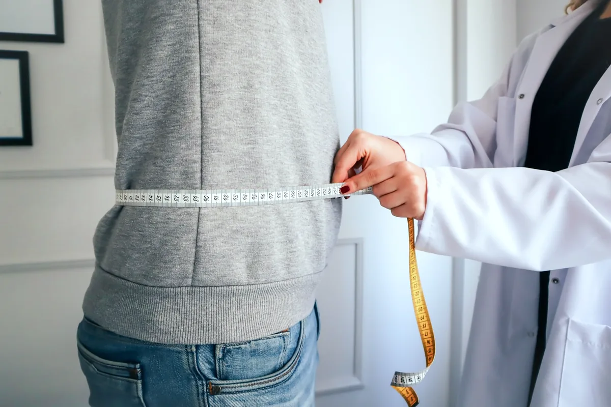
Метаболизм и снижение веса Лишний вес, вес стоит на месте Инсулинорезистентность Нарушения обмена веществ Усталость, сон, стресс Функциональные нарушения ЖКТ Как работаемБоль, позвоночник, суставы
Работаем с причиной боли, а не только с симптомом. Ниже - случаи, с которыми к нам приходят чаще всего.

Поясничный и шейный отделы, L3-L4, L4-L5, L5-S1. Разбираем, что даёт боль и можно ли обойтись без операции.
Подробнее о лечении грыжи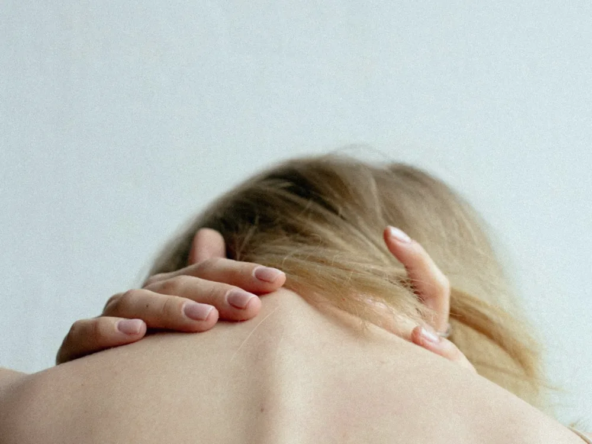
Прострелы, скованность, боль отдаёт в ногу или руку, немеют пальцы, жжение между лопатками.
Подробнее о лечении боли в спине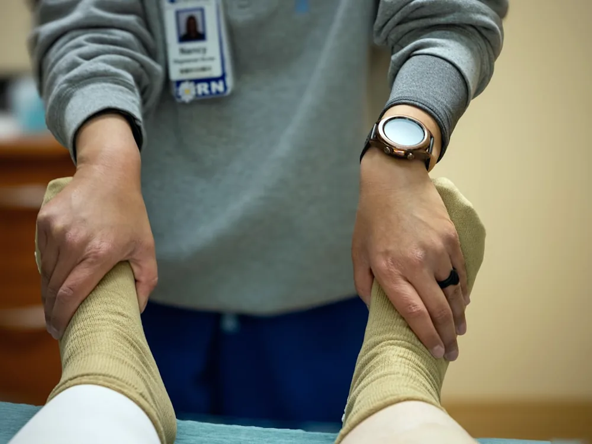
Колено, тазобедренный, плечо: боль при ходьбе и по лестнице, хруст, отёк, скованность по утрам.
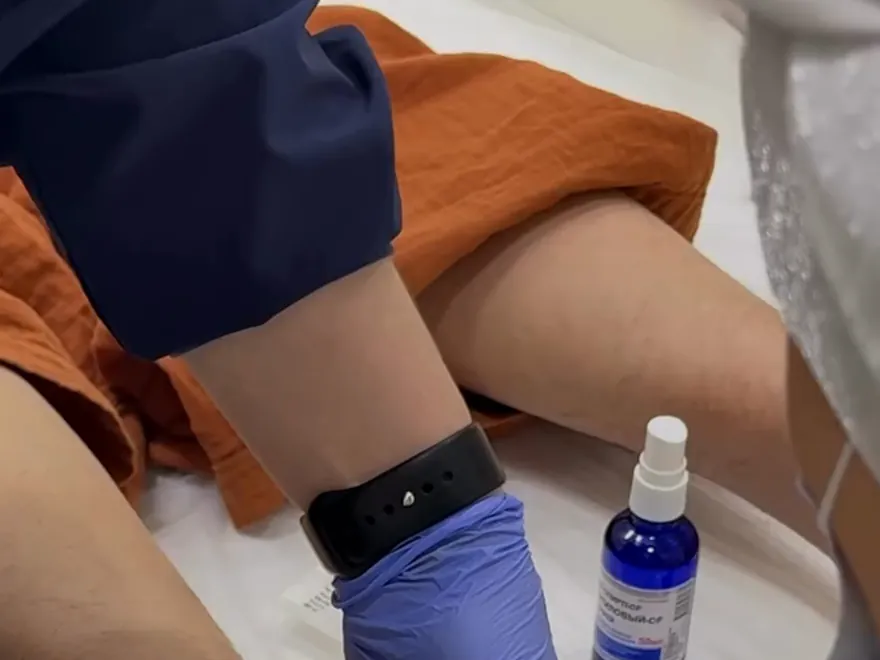
Больно наступать утром и после отдыха, колет пятку при ходьбе, жжение в стопе.
Подробнее о лечении шпоры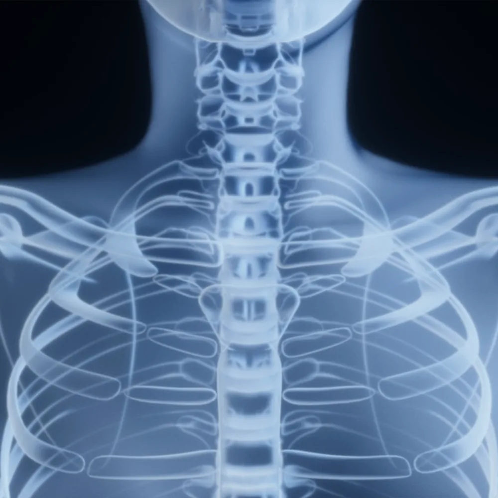
Ишиас и седалищный нерв, миофасциальный синдром, мышечные зажимы, онемение и покалывание.
Опишите, что беспокоит. Ответим, поможем ли и с чего начинать.
Методы
Метод и число сеансов подбирает врач после диагностики. Ниже - то, чем мы работаем чаще всего.
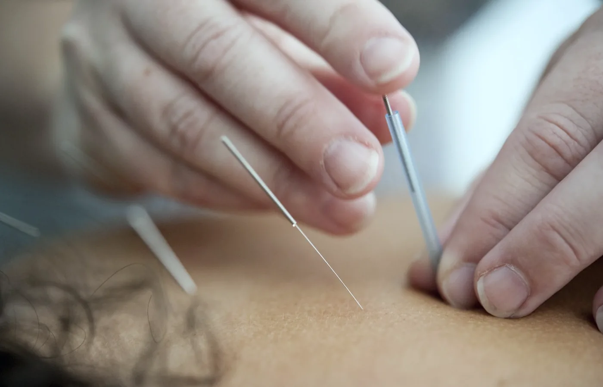
Авторский метод, товарный знакТочечная работа с триггерными зонами и мышечными зажимами. Амбулаторно, без разреза и без наркоза.
Показания определяет врач на приёме
Подробно о методе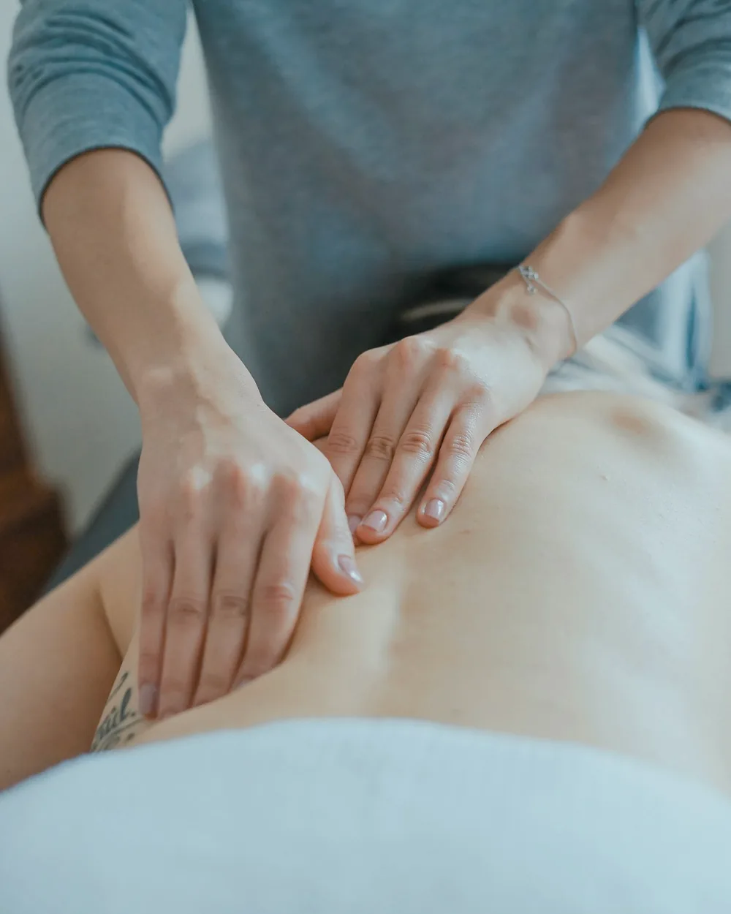
Воздействие на рефлекторные точки: снимаем спазм, работаем с болью и тонусом мышц.
Курс подбирается индивидуально
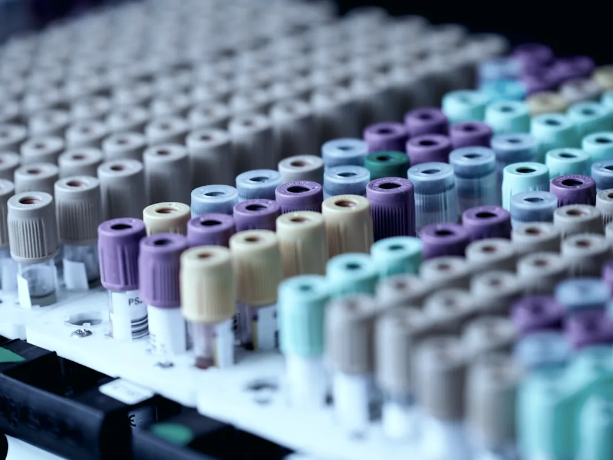
Плазмотерапия сустава собственной плазмой пациента. Назначается по показаниям и результатам обследования.
Только по назначению врача
Другие методы врач подбирает индивидуально - под диагноз, возраст и сопутствующие состояния.
Подход Reflex
Сооснователь клиники объединила восточную работу с точками и европейскую реабилитацию. Так появился подход Reflex.
Врач-невролог, реабилитолог. Сооснователь клиники Reflex
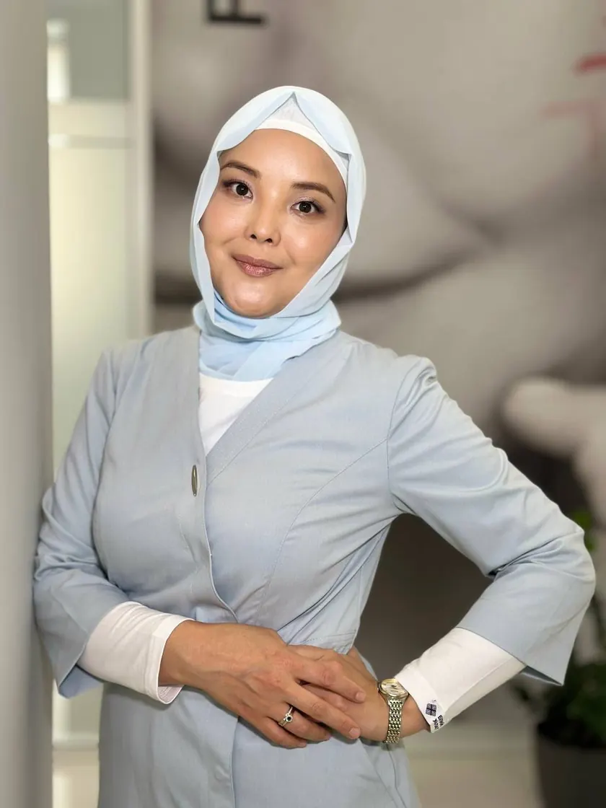
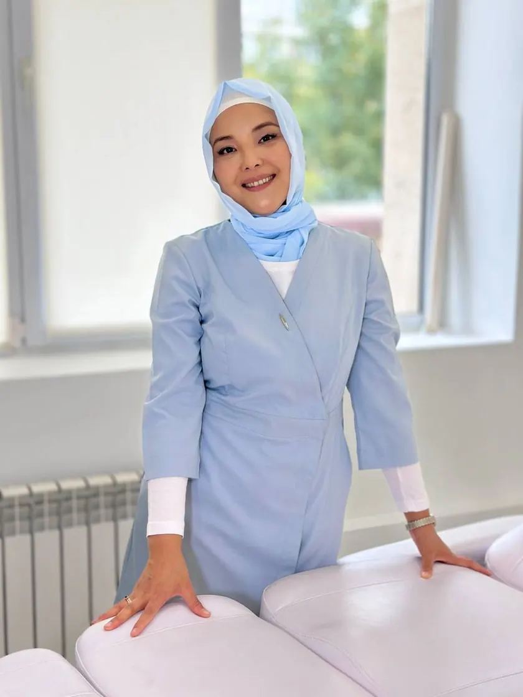
Клиника изнутри
Кабинеты, компьютерная диагностика, работа врача. Снято в нашей клинике на Жарокова, 137.
Как проходит приём
Оставляете заявку на сайте и пишете, что беспокоит. Подбираем время.
Компьютерная диагностика на БРТ-аппарате плюс приём врача клиники.
Врач объясняет причину и предлагает план по показаниям.
Проходите курс, врач отслеживает динамику и корректирует программу.
Первичный приём
Предложение для первичных пациентов клиники. Обычная стоимость этого приёма - 25 000 ₸.
5 000 ₸25 000 ₸
Приём ведёт врач клиники. Диагностика не заменяет обследование по назначению.
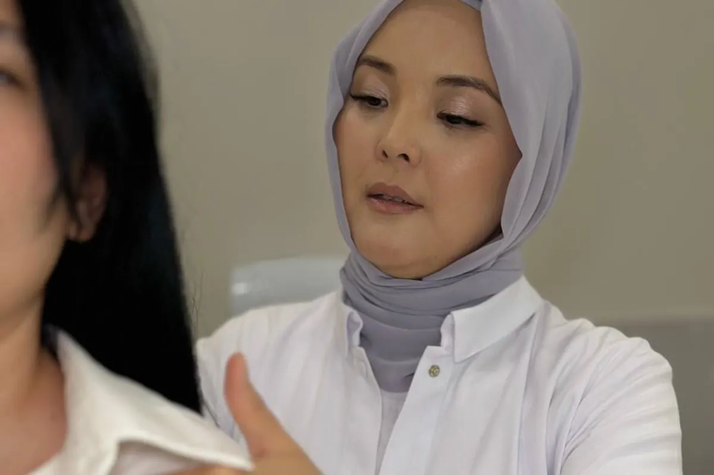
Цену процедуры врач называет после диагностики: она зависит от показаний, зоны и длительности курса. Прайса «на всех» у нас нет.
Узнать стоимостьОтзывы и результаты
Видеоотзывы наших пациентов - как есть, без монтажа обещаний. Ниже можно посмотреть каждый целиком, со звуком.
Видео публикуем с согласия пациентов. Результат индивидуален и зависит от диагноза, стадии и выполнения рекомендаций.
Документы
Клиника работает официально, а авторские методики закреплены за нами по закону. Нажмите на документ, чтобы рассмотреть его целиком.
Лицензиар - Департамент Комитета медицинского и фармацевтического контроля Минздрава РК по городу Алматы. Свидетельства выданы Национальным институтом интеллектуальной собственности.
Запись на приём
Имя, телефон и что беспокоит - этого достаточно. После отправки откроется WhatsApp с готовым текстом: туда можно приложить МРТ и снимки.
Контакты
Нас находят не сразу: вход через салон красоты. Ниже - короткая схема, как дойти.
Как найти вход